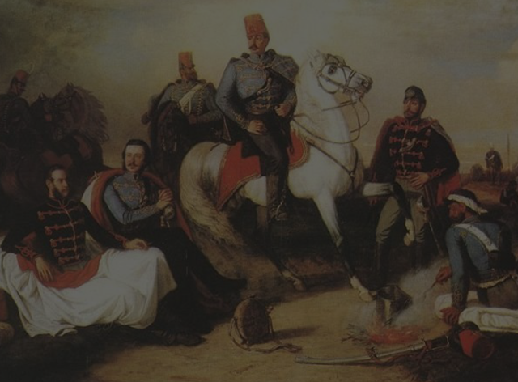
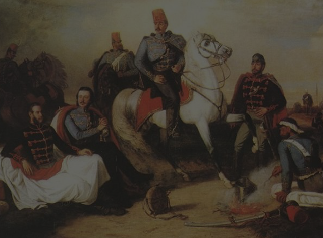
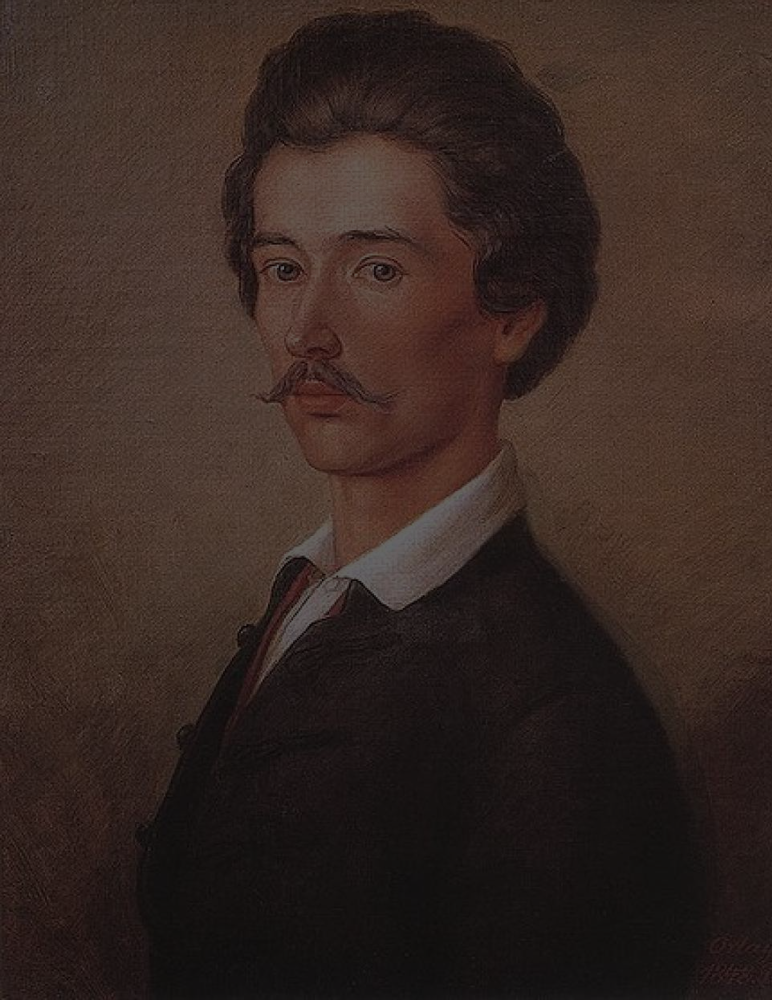
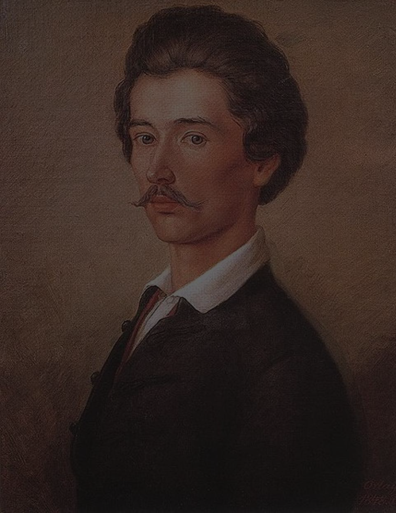

A reformkor kezdetét Magyarországon 1825-től tekintjük, vagyis a Pozsonyi országgyűléstől. Vezéralakjai között felsorakozik gróf Széchenyi István, Kossuth Lajos, Wesselényi Miklós, Kölcsey Ferenc. A békés reformokat támogató politikusok és írók, sürgették a változásokat hozó folyamatokat, a kulturális élet területén is. 1830-ban kezdte meg működését a Magyar Tudós Társaság, vagyis mai nevén a Magyar Tudományos Akadémia. 1837-ben megépült a Pesti Magyar Színház, ami a korban nagyon különleges kulturális eseményeknek adott helyet. A Pesti Színház a Duna mellett helyezkedik el, napjainkban már Nemzeti Színházként ismerhető. 1836-ban alakult meg a Kisfaludy társaság, amely támogatta a feltörekvő írókat és költőket, pályázatokat hirdettek számukra. Az egyik ilyen pályázatra írta például Arany János a Toldi című művét, amivel meg is nyerte a kihirdetett pályázatot, később tagja is lehetett a társaságnak, majd pedig igazgatója is lett. Ebben a korban jelentős fórum volt a sajtó, ahol sok féle hírlap jelent meg az utcán, mint például az: Hazai Tudósítások (1806–1839), Tudományos Gyűjtemény (1817–1841), Jelenkor (1832–1848), Regélő (1833–1841). De a reformkor kezdetén, a 19. század elején még jelentős irodalmi elnyomás volt jelen a cenzúra miatt. Az akkori Magyarország még a Habsburg Birodalom része volt, ezáltal a Habsburg uralkodok gyakran elnyomták a magyarokat, emiatt válsághangulat alakult ki Magyarországon. A Reformkor vezéralakjai küzdenek a szólásszabadságért, a szabad nyelvhasználatért, és a magyarországi kapitalizmusért. Az válsághelyzetet jelentősen meghatározta, a szellemi, gazdasági elmaradottság, ami ellen a költők tenni szerettek volna. Az irodalomban a téma leginkább a politika, a Habsburg cenzúra elleni tiltakozás volt, ezt szerették volna színesíteni, a mindennapokat élvezhetőbbé tenni műeikkel a költők. Itt különböző regények jelentek meg szórakoztatás céljából, mint a Toldi, a János vitéz.
 

A különböző újságokon kívül jelentős szerepet töltött be a korban a romantika műfaja, ezért emlegetik sokan az irodalom terén ezt a korszakok Romantika korának is, maga a szó a francia „Roman” (regény) szóból ered. A romantika eltérő időben terjedt el, a magyar irodalomban később, a 19. század elején jelent meg. A romantikát az eszményítés vezéreli, a romantikus alkotás az eszméket sugároz, elsősorban a szabadságot. Személyes vonásokat, belső tartalmakat tartalmaz, így kifejezésre kerül a költő érzelmi világa is. A nemzeti karakterek szerepe jelentős, emellett felértékelődnek a korra jellemző sajátosságok. Nagy szerepet kap a művekben a kaland, az érdekességek, a mese, az álom és a mitológia. Jellemzője a szabad önkifejezés, egyedi és szabálytalan. Jellemző hangneme a pátosz a humor és az irónia, először a német és angol művészetben fejlődött ki, majd a 18. század végén, a 19. század elején ért el Magyarországra. Magyarországon a nemzeti törekvések kifejezését, az irodalmi nyelv megújulását képviselte a romantika. Átütő érvényesülése az irodalomban csak 1817 körül következett be Kölcsey nevezetes fordulatával. Egyik kezdeti, de mégis vezéralakja Kisfaludy Károly költő, drámaíró. Ismert drámája a „Tatárok Magyarországon”, ismert költeménye, a „Mohács” a romantika egyik legjellegzetesebb alkotásai. Másik ismert alakja a romantikának Katona József, akinek „Bánk bán” című művét mindenki ismeri. „Bánk bán” című műve történelmi tárgyú, nemzeti és magánéleti tragédiát ábrázol, a mű érzelmes, fordulatos drámákra épülve szerves egységet képez, de akció is megjelenik benne. A romantika korba sorolható még Vörösmarty honfoglalást elbeszélő hőskölteménye is a „Zalán futása”, ami rendkívüli módon írja le a honfoglalás történetét. Vörösmarty Mihály és Kölcsey Ferenc jogosan nevezhető a romantikus irodalom legnagobbjainak, Kölcsey költő, politikus, a magyar irodalomkritika rendkívüli személye. Kazinczy pedig klasszicizmus híveként indul pályáján, részt vesz a nyelvújítási küzdelmében is. Kazinczy eleinte bírálta a romantikus irodalmi szerzőket, később fordulatként ő maga is elfordult a Klasszicizmustól.
Vörösmarty Mihály nemzeti kultúránk első vezéralakja, a magyar romantika legnagyobb költője. Szolgálja a művészet és a tudomány kibontakozását különböző, rendkívüli tevékenységeivel. Sok hősi eposzt, elbeszélő költeményt írt pályafutása során, a hazafias politikai líra virágkorát művei képviselik. Ide tartozik legismertebb művei, mint például: a „Szózat”, a „Gondolatok a könyvtárban”, és az „Előszó”. Van, amikor művében gondolatai filozofikus eseményekkel bővülnek ilyen a „Csongor és Tünde” című műve is. Középpontjában a boldogság keresése, és a hazának a szeretete áll, megfigyelhető rajta a rendületlen hűség és az alkotói hazafiság. Művei rendkívül sokszínűek, vannak benne reális elemek, vannak kozmikus elemekkel színesednek. Említésre méltó írója még a kornak Jókai Mór, aki az elsőszámú magyar romantikus regényíró címet jogosan elnyerte, az olvasóközönség egyik kedvence. Kiemelkedő művei, az „Egy magyar nábob”, „Az új földesúr”, „A kőszívű ember fiai” és „Az arany ember”, de ezeken felül is sok érdekes, napjainkban is olvasott művet irt. Költészetére jellemző volt, hogy főhősei eszményített, szélsőségesen romantikának megfelelő alakok, vagyis nagyon pozitív, vagy nagyon negatív alakok, ezáltal egy ellentét alakul ki a főhősi szereplők között, emellett mellékalakjai is érdekesek. A cselekménye mindig több szálon fut, nem nevezhető sosem lineáris végkifejletűnek. Ismert költői még Csokonai Vitéz Mihály és Fazekas Mihály. Csokonai Vitéz Mihály költészetének legismertebb művei, a „Reményhez” és a „Tartózkodó levél”.
A Magyar irodalomban, a korban voltak költők, akik túlléptek a romantika keretein, ilyen volt például: Petőfi Sándor, Arany János, Madách Imre. Petőfi Sándor a romantikát is képviselve kezdte pályáját, de annak szélsőséges elemivel már az elején szakított, és saját öntörvényű világát kezdte el megalkotni. A lírát a dalköltészetbe ültette át, ő nem támogatta az érzelmes lírákat, az irodalmat az önkifejezés színterévé formálta. Nem véletlenül, a forradalom vezéralakja, a szabadságharc lelkes híve és katonája is volt, sőt szimbóluma is lett. Életművében a romantika vonulását a „János vitéz” című művével mutatta meg, annak meseszerű világával. Arany János is a kor egyik vezéralakja volt, ahogy már említve volt a „Toldi” című művével a Kisfaludy Társaság pályázatát, tagsági helyét is megnyerte. Ezzel a művével lett rendkívüli az irodalomban, a mű a romantika irodalmának egyik tökéletes megfelelője.
A reformkor irodalma a Magyar 1848-as szabadságharccal zárult, ahol Petőfi ismert „Mit kíván a Magyar nemzet”12 pontból álló Pesti forradalom követeléseinek megfogalmazása került nyilvánosságra Petőfi tollából.
 
